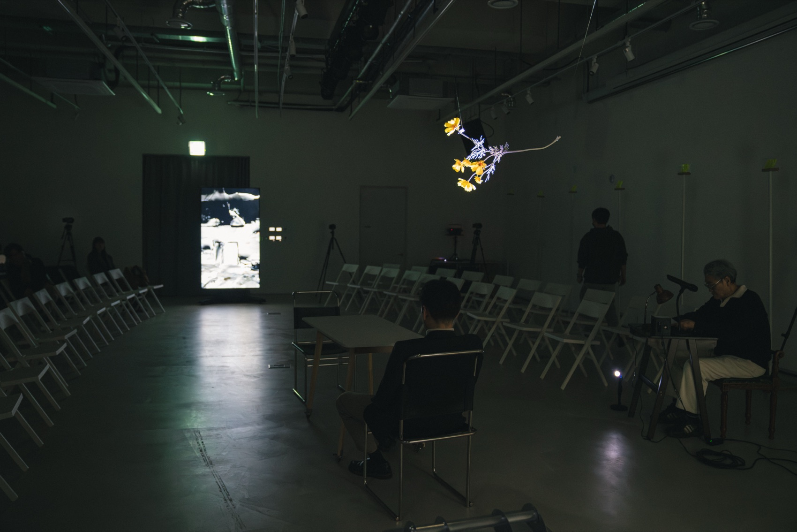
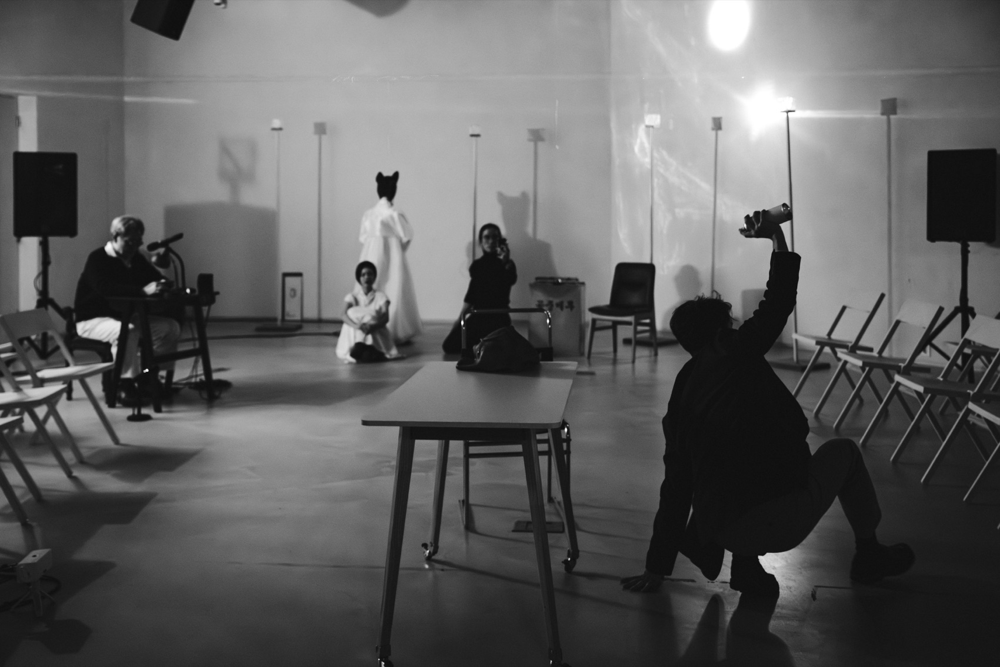
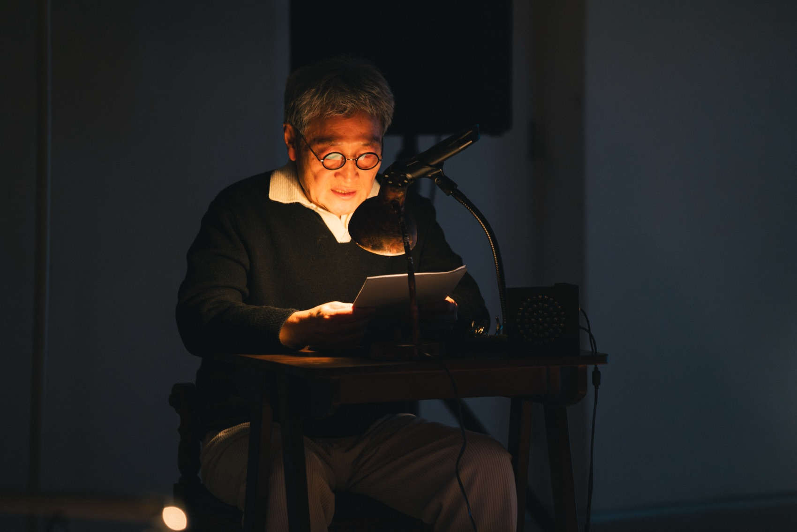
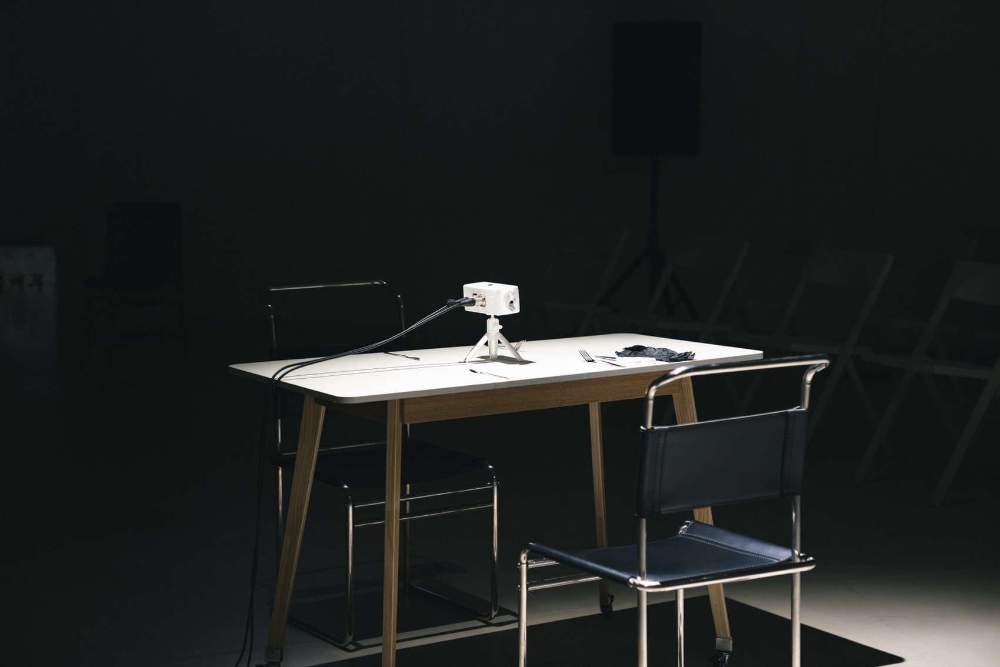
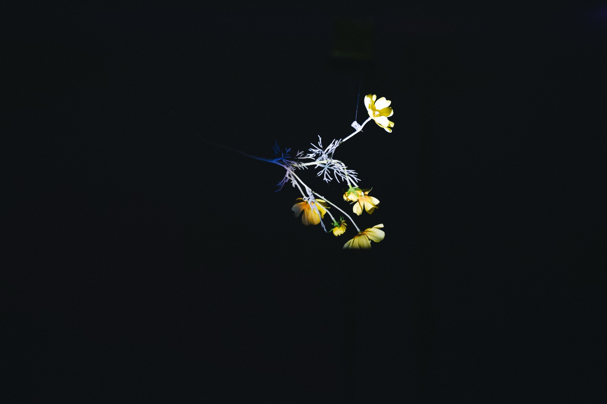
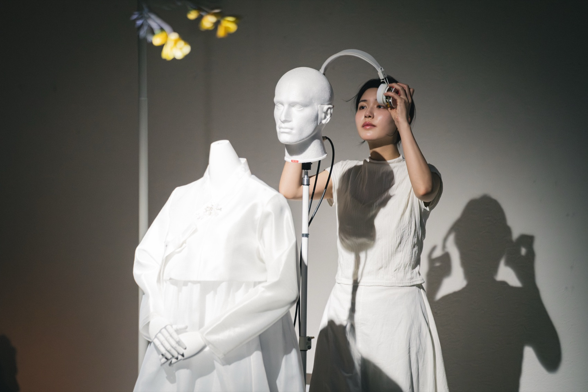
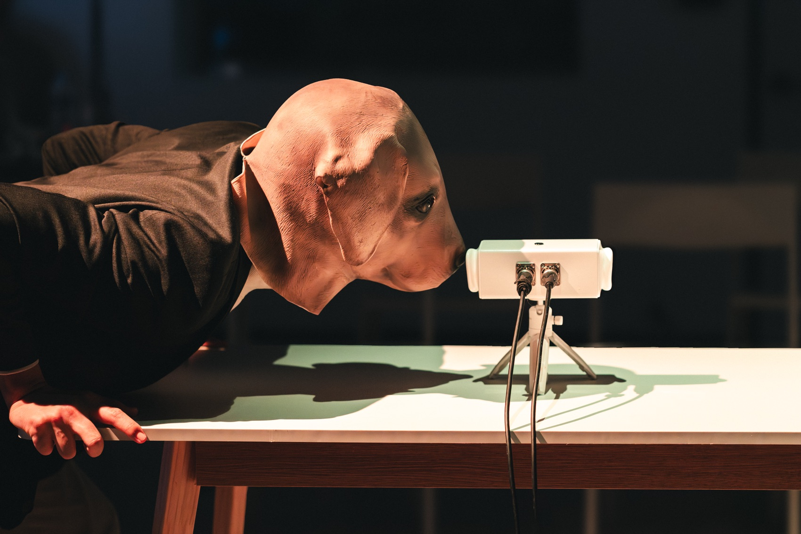
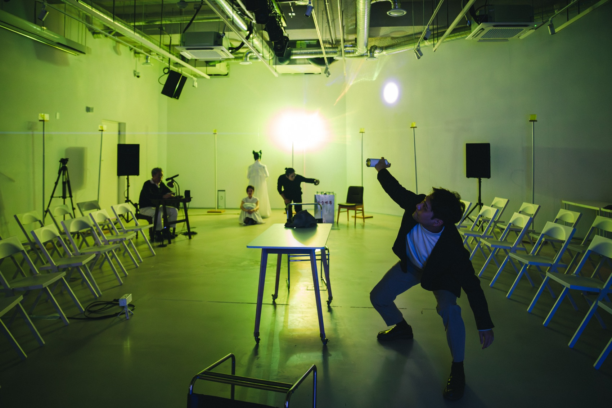
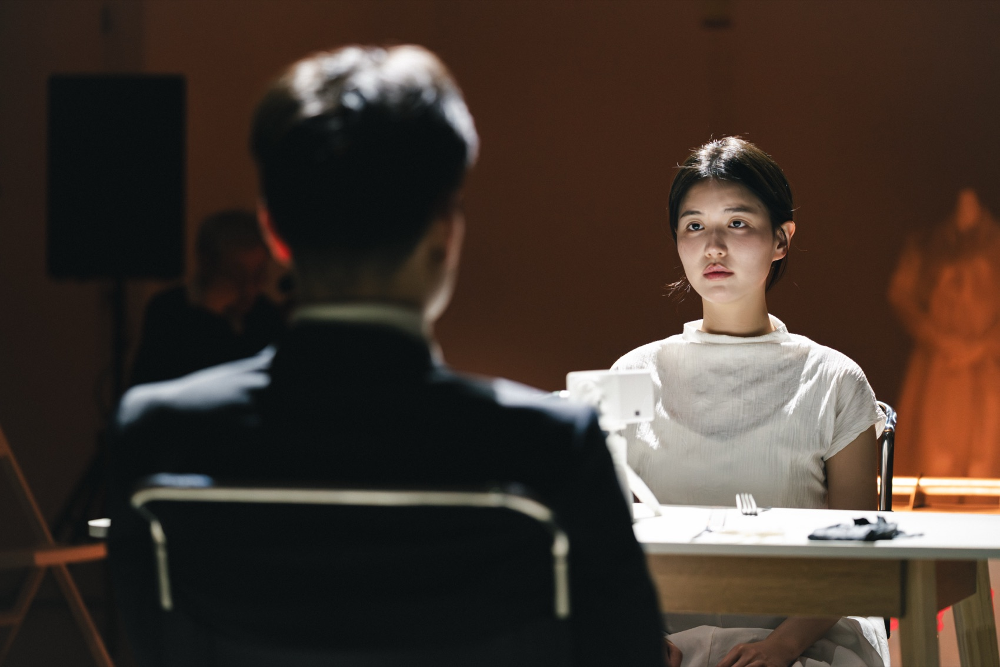

Performance — 2025
What Flower Did
the Cheshire Cat Carry?체셔 고양이는 무슨 꽃을 물었을까? · 고등과학원
몸과 웃음이 따로 나타나고 따로 사라지는 체셔 고양이의 신체 — 그 낯선 지리 위에서 ‘목소리성’을 묻는 융복합극.
The Cheshire Cat’s body, where flesh and grin appear and vanish separately — a convergence play asking after ‘voiceness’ on that strange terrain.
소크라테스는 동시대인들에게 성가신 ‘날파리’로 불렸습니다 — 그가 나타나면 아무렇지도 않던 말들이 아주 낯선 자리로 떨어져 버렸기 때문입니다. 이 공연은 우리가 당연하게 여겨 온 공간이라는 문제를 그 낯선 지리에 놓습니다. 루이스 캐럴의 체셔 고양이는 모든 현재의 순간이 전체로서의 과거와 늘 동시적으로 공존한다는 은유가 되고, 연구단의 주제 ‘목소리성’은 이 여정의 첫 이정표가 됩니다 — 레코드판처럼 공간에 새겨진 목소리가 있고, 공간의 관성을 거부한 대가로 파편화된 목소리가 있습니다. 거기 놓인 죽음과 사랑은 어떻게 흘러가고 각인되는가? 기억이 서까래 위에 올라앉은 체셔 고양이의 웃음처럼 사라질 때, 꽃은 어디에서 피는가?
무대에는 라이다(LiDAR) 센서와 레이저, 입체 음향, 사운드스케이프가 결합됩니다. 레이저 빛은 세계선(世界線)을 의미하고, 벽면의 아크릴 큐브 12개가 빛을 받아 발광합니다. 흰 한복의 마네킹은 기억 속의 여자 — 작가의 ‘당신’ — 이며, 더미헤드 마이크가 그 몸에 귀를 답니다. 꽃은 소통의 부재를 뜻합니다. 전작 ‘공중매’의 남자 ‘공남(空男)’이 매개자로 돌아와 시공간과 무대, 마네킹을 작가의 당신으로 잇습니다.
Socrates was his contemporaries’ irritating ‘gadfly’: wherever he appeared, ordinary words fell into strange territory. This performance sets the question of space — long taken for granted — on just such terrain. Carroll’s Cheshire Cat becomes a metaphor for every present moment coexisting with the past as a whole, and the unit’s theme of ‘voiceness’ is the journey’s first signpost: voices inscribed in space like a record’s groove, and voices fragmented as the price of refusing space’s inertia. How do the death and love placed there flow and engrave themselves? When memory vanishes like the cat’s grin on a rafter, where does the flower bloom? On stage, LiDAR sensors, lasers, spatial sound and soundscape combine: laser light traces world-lines, twelve acrylic cubes glow along the wall, a mannequin in white hanbok holds the remembered woman — the writer’s ‘you’ — with a dummy-head microphone for ears, and a flower stands for the absence of communication. The man of 空 from ‘Gongjungmae’ returns as mediator.
- 작
- Written by
- 함성호
- 연출·미디어
- Direction & media
- 김제민 Kim Jae Min
- 사운드·장치
- Sound & devices
- 권병준
- 음악
- Music
- 민경현
- 출연
- Cast
- 박병호 · 이창재 · 조한비
- 주최·주관
- Host
- 고등과학원 · 초학제 연구단 ‘느린 과학, 낮은 기술, 거꾸로 선 예술’
- KIAS · the transdisciplinary research unit
- 키워드
- Keywords
- voiceness · LiDAR · world-line · Cheshire Cat
공연 기록 — 서울시립 미술아카이브, 2025. 12.
Performance record — SeMA Archive, Dec 2025







